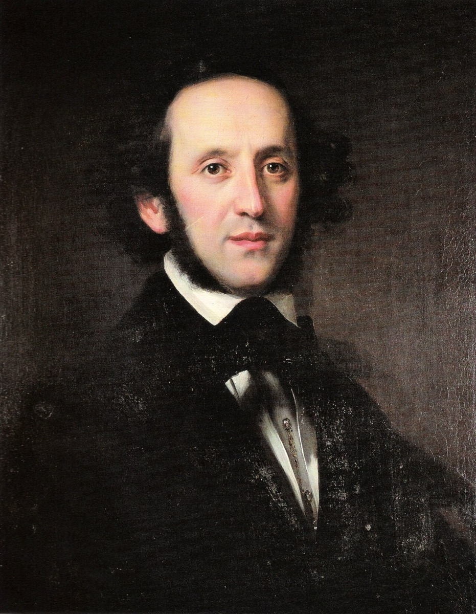

A birthday present: the copyist's score of the Matthew Passion

The most consequential concert in Western music history began as a birthday present. Around 1823–24, Bella Salomon — grandmother of Felix Mendelssohn, matriarch of the banking family whose Berlin salon culture had kept "ancient music" alive for a generation — commissioned a complete manuscript copy of the St. Matthew Passion, drawn from the materials in Zelter's Singakademie orbit, and gave it to her grandson. The era essay notes the family accounts vary on the exact occasion — his fifteenth birthday, or thereabouts. The boy was fourteen or fifteen, already a prodigious composer, and already trained by the gruff old Zelter himself in the strict old counterpoint. He was, in other words, perhaps the one adolescent in Europe equipped to understand what he had just been handed.
Consider, first, what the gift assumes. In the 1820s the greatest sacred work of the previous century existed only in manuscript. There was no edition to buy, no publisher to order from; reproducing the Passion meant engaging a copyist to write it out by hand, page after page — a bespoke luxury purchase, of the kind only wealth and unusual conviction would undertake. And consider who undertook it: a Jewish-descended banking matriarch of Berlin, commissioning the monument of Lutheran church music as a present for a boy. The Mendelssohn family's complex position sits entirely inside this scene — grandchildren of the philosopher Moses Mendelssohn, converted to Protestantism, at once inside and outside the culture that was busy claiming Bach as national patrimony. Felix understood the position precisely; his later wry remark about "an actor and a Jew's son" reviving the great Christian music for the world shows exactly how clearly.
What the boy did with the score is the part no one could have commissioned. He lived with it for five years — studying it, absorbing it, playing it at the family's Sunday musicales, where Berlin's cultivated circles drifted through the Mendelssohn house. Around the manuscript a small cell of enthusiasts formed, and one member proved decisive: Eduard Devrient, the baritone — and actor — whose memoirs preserve the whole campaign. It is from Devrient that we have the story of the endgame: the two young men in 1829, calling on the skeptical old Zelter, who owned the treasures and doubted the public was ready, and talking him into lending his choir, his hall, and his blessing to the performance the next card records. When the evening finally came, Devrient sang Jesus, and Felix conducted from memory — five years of living with a birthday present, audible in every bar he no longer needed to look at.
This card matters because it is the last link in a chain the eclipse arc has been forging for decades. Bach's survival through the dark years was a relay of private custodians — his students carrying the music to the salons, the salons passing it to the prodigies — and here the relay reaches its terminal handoff: from custody to performance, from the guarded manuscript to the boy who would put it back in front of the public. Zelter had preserved; Bella Salomon had transmitted; Felix would perform. Each step private, domestic, invisible to history until the last one.
And that is the object lesson the whole reception story keeps teaching. The revival of 1829 looks, from a distance, like a thunderclap — a date, a hall, a famous evening. Up close it is a copied score, a grandmother's extravagant gift, a teenager's five years of study, and a room of friends plotting against an old man's caution. Revolutions of taste begin as private objects, years before they have a public date. The public date, in this case, was now five years away.
Continue with the era essay: The Rediscovery: 1829–1850, or go straight to the evening itself: 11 March 1829.
Devrient, Meine Erinnerungen an Felix Mendelssohn (1869)
Applegate, Bach in Berlin
→ full bibliography & links